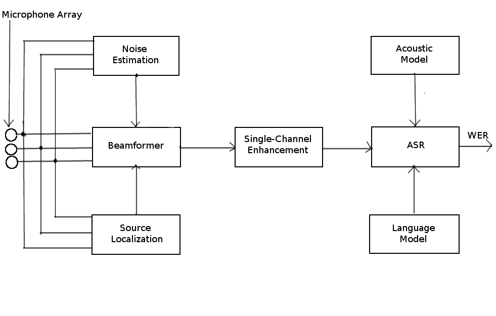
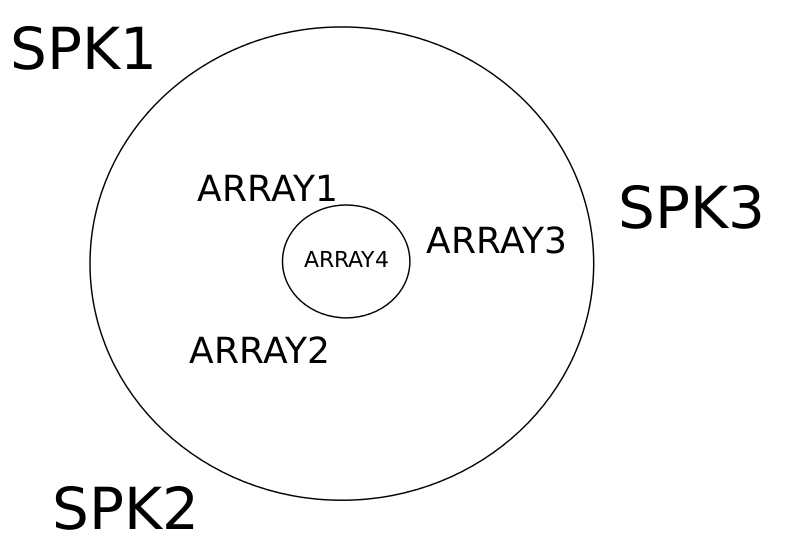

Overview
Speech is the most natural mode of communication and distant speech recognition enables us to communicate conveniently with other devices without any body or head-mounted microphones. But the real world deployment of such systems comes with a lot of challenges. This work seeks to address the two major challenges in such a system namely noise and reverberation by using microphone arrays. Many noise reduction and dereverberation algorithms already exist, but so far no clear methods have emerged that combine the advantages of multi and single-channel methods with the aim of improving speech recognition performances. As a preliminary work, the ASR performances of different multi-microphone algorithms based on beamforming techniques are compared. Prior to beamforming, different source localizations were implemented to accurately estimate the direction of the speaker.
Goal
Having a scenario of a meeting room, we wish to extract out the desired speaker from the group of speakers and convert his spoken words to text for the purpose of documenting or displaying his/her spoken words. Achieving this conversion from speech to text is not a straight-forward task as one needs to take care of reverberation and noise. Also, there can be a case where multiple speakers are speaking and only a single speaker needs to be recorded. This work tries to overcome two main challenges noise and reverberation commonly occurring in enclosed scenarios like home and meeting environments using an array of microphones.
Proposed system
The microphone array based Distant Speech Recognition(DSR) systems can be decomposed into three different modules:
1. Acoustic Source Localisation and beamforming: Localization is a process of finding the direction of the speaker
using the information from the signals received at the microphone array. Beamformer spatially filters the signals to attenuate
noise from directions other than the estimated speaker direction.
2. Single-Channel Enhancement: The post-filtering process of single channel speech signal for further mitigation of noise and reverberation.
3.Automatic Speech Recognition (ASR): Speech recognition engine generates a hypothesis regarding what the speaker said
from the enhanced acoustic waveform with help of a trained acoustic and language models. These hypotheses are compared with reference text to compute accuracy in terms
of WER.
Setup for recording
The microphone array used to record the speaker(s) was a uniform circular array. The position of the array and the speakers are shown in the figure below:

Figure: TCS- Uniform circular array
The speakers are located at an obtuse angle with respect to one another.